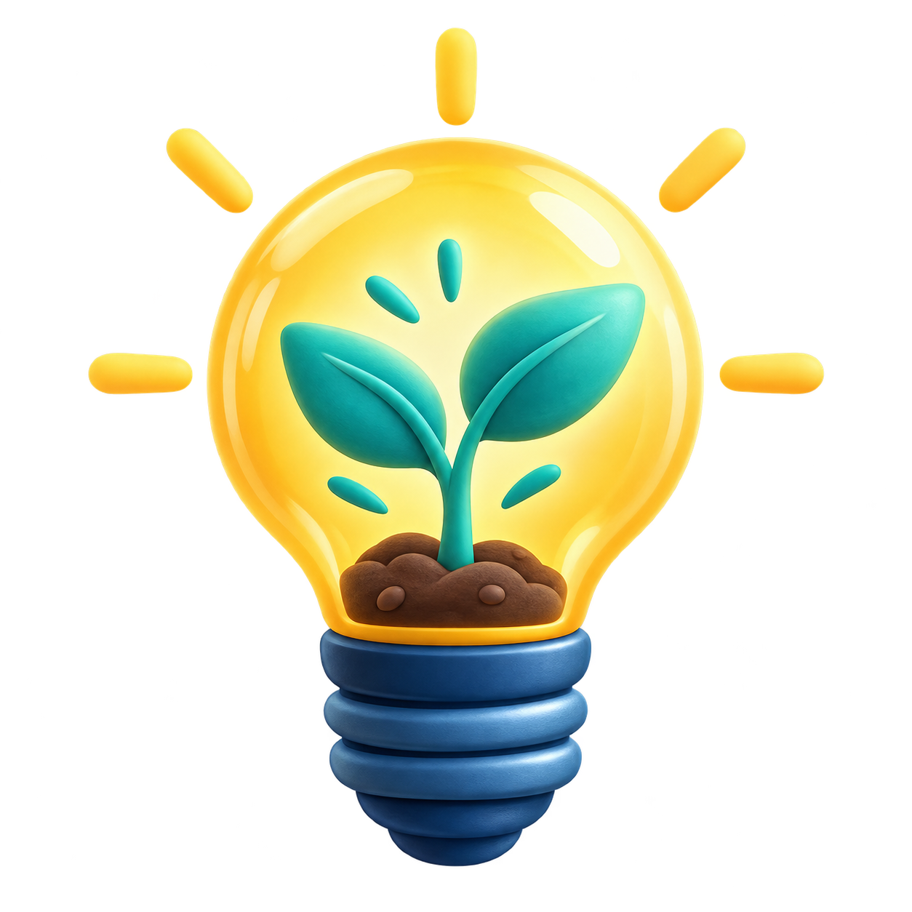
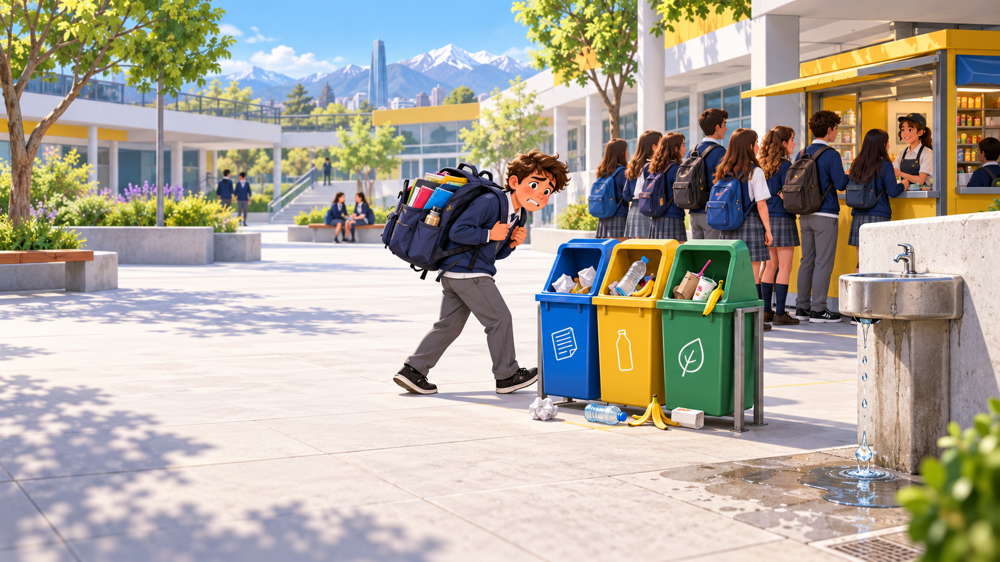
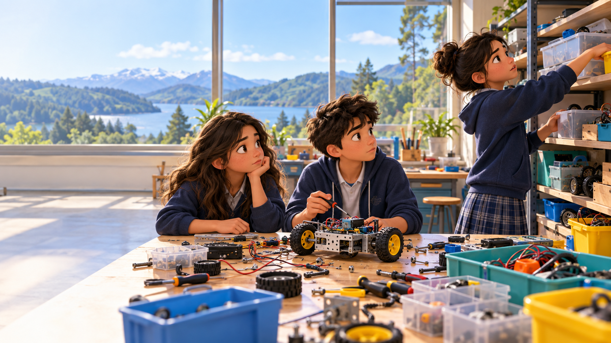
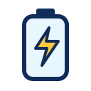
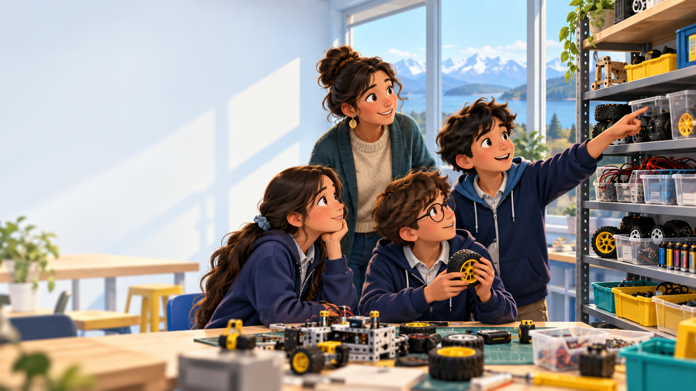
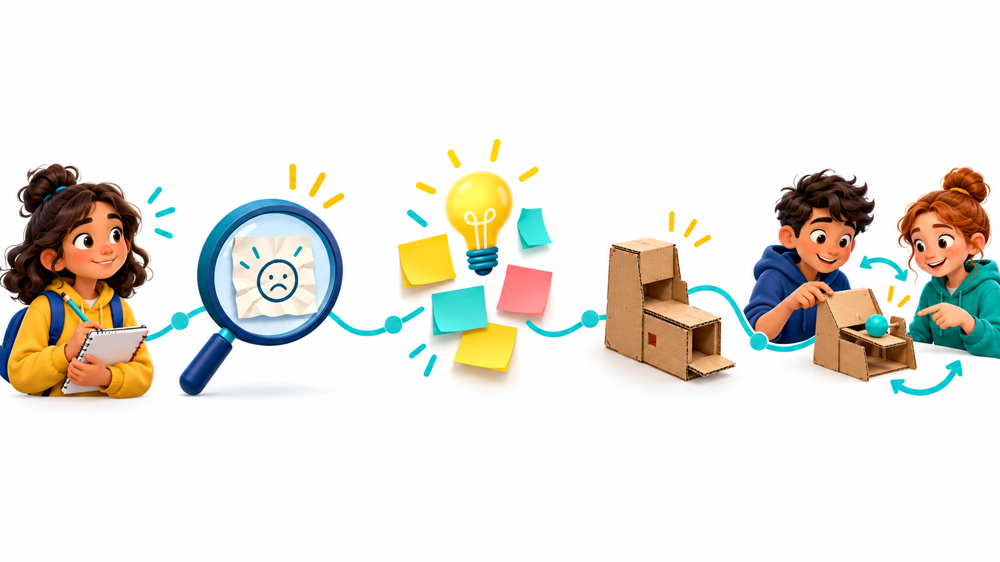
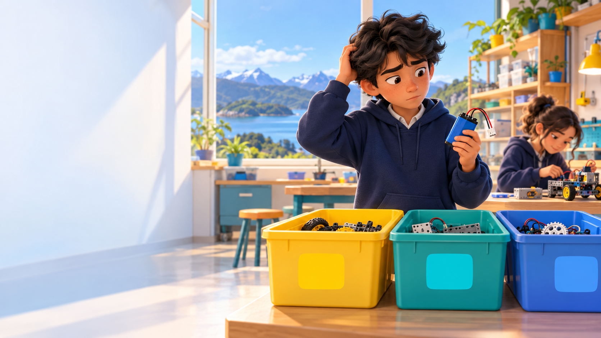
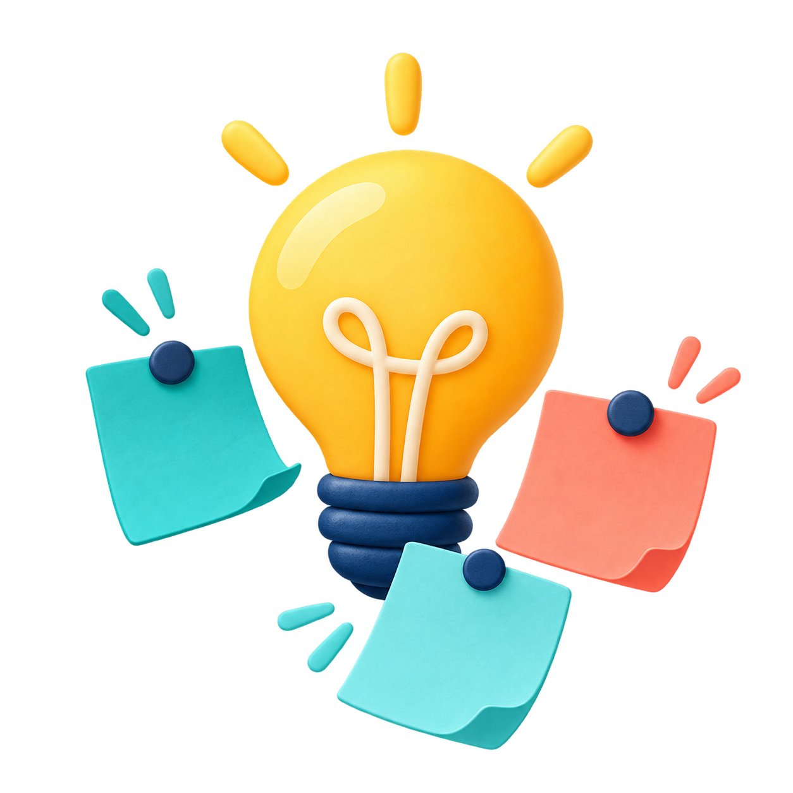
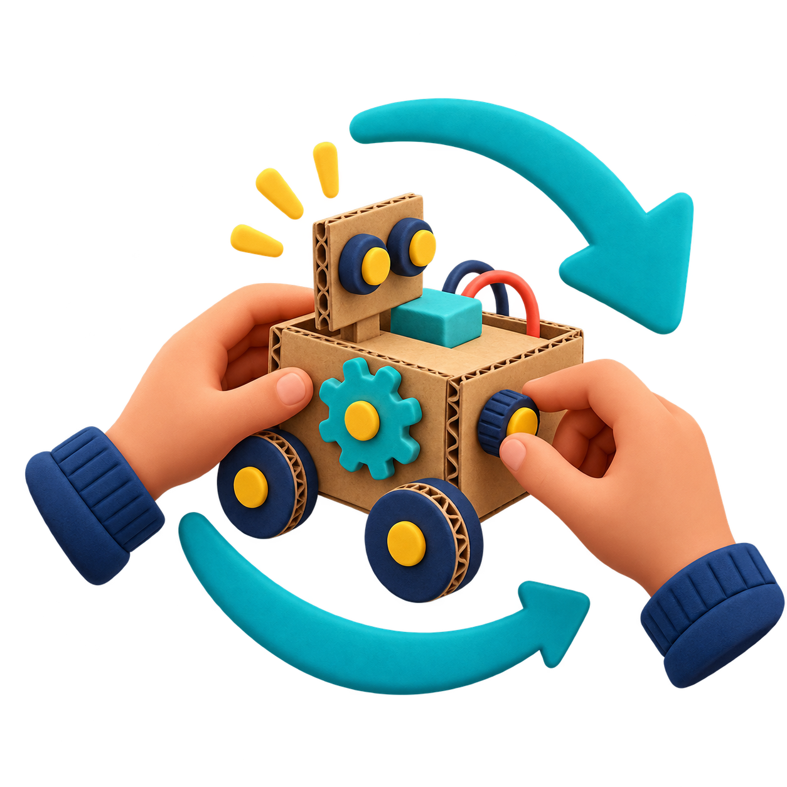

PREGUNTA CLAVE
De un problema
a una idea:Cómo crear soluciones que sí funcionan
Emprendimiento e Innovación Productiva · FIERTEC Los Lagos 2026
Sebastián Pastén · Facultad de Ingeniería USSANTES DE INVENTAR
Una idea brillante puede no servir
Si un equipo no encuentra una batería, ¿necesita un robot mejor?
Primero entendamos qué le está costando a las personas.
Pregunta apurada
“¿Qué invento podemos hacer?”

Pregunta que abre caminos
“¿A quién queremos ayudar y qué le está costando?”

PRIMER PASO · OBSERVAR
Cuatro pistas. Ninguna solución todavía.
1 Agua que se pierde2 Residuos mezclados
3 Espera en el kiosco4 Mochila muy pesada
Ver una pista no es entender su causa. Ahora entremos a un taller de la feria.

UN CASO PARA SEGUIR
El robot se detuvo.
No por el código.
Falta la batería. Mientras la buscan, el equipo deja de construir.

Sabemos lo que vemos. Aún no sabemos por qué ocurre.
DESIGN THINKING · EMPATIZAR
Escuchar antes de diseñar
El mismo taller puede verse distinto según quién lo use.
Quien construye¿Cuándo deja de trabajar para buscar?
Docente¿Qué piezas cuesta encontrar?
Quien devuelve¿Dónde deja lo que usó?
Observar + escuchar + registrar.
DESIGN THINKING · DEFINIR
Nombrar bien el problema cambia las ideas
No es “necesitamos una app”. Eso ya sería elegir una solución.
LO QUE VEMOSSe detienen a buscar piezas
→LO QUE PREGUNTAMOS¿Por qué cuesta encontrarlas y devolverlas?
→POSIBLE NECESIDADEncontrar y devolver materiales sin interrumpir el trabajo
Es una hipótesis: conversar y observar más puede cambiarla.
UNA FORMA DE APRENDER
Design Thinking
Diseñar pensando en las personas. Ya observamos y propusimos una necesidad; ahora toca imaginar, construir y probar.

Si la prueba revela otra causa, volvemos a observar.
DESIGN THINKING · IDEAR
Tres ideas. No todas ayudan.
Buscamos una forma de encontrar y devolver materiales sin detener el proyecto.

ANTES DE CONSTRUIR
¿Funcionará cuando alguien la use?
Una etiqueta puede parecer clara en el papel y fallar en el taller.
¿La ven? La señal destaca desde donde trabajan.
¿La entienden? Una persona nueva reconoce la caja.
¿La usan al devolver? El orden sigue funcionando al terminar.
No basta con preguntar «¿te gusta?». Observemos qué hace.
ELEGIMOS UNA PRUEBA PEQUEÑA
¿Cómo sabremos si ayuda?
Probamos la misma tarea en dos versiones del taller.
ANTESBuscar y devolver la bateríacon piezas mezcladas
→CON EL PROTOTIPOBuscar y devolver la bateríacon señales de papel
Tiempo de búsqueda¿Tarda menos en encontrarla?
Lugar de devolución¿Queda en la caja correcta?
Todavía no tenemos resultados: esta es la pregunta que queremos responder.
DESIGN THINKING · PROTOTIPAR
Un cambio pequeño para aprender
Pasamos de una caja mezclada a tres cajas con señales de papel.
LO QUE QUEREMOS SABER¿Alguien nuevo encuentra y devuelve la batería sin ayuda?
HOY
Todo mezclado
→
PRIMER PROTOTIPO
Tres señales claras
RUEDAS
CABLES
BATERÍAS
DESIGN THINKING · PROBAR
La prueba da una pista, no un veredicto
Imaginemos que la batería se encuentra, pero termina en la caja de cables.
Observamos una acción. Todavía no sabemos por qué ocurrió.
→
CABLES
Preguntamos¿Qué señal vio? ¿Qué entendió?
CambiamosHacemos más visible la señal de batería.
Probamos otra vez¿Ahora la devuelve bien? Hay que observarlo.
DE LA IDEA AL VALOR
Tres preguntas diferentes
Una idea creativa no se convierte automáticamente en innovación.

CREATIVIDAD¿Qué se nos ocurrió?Fotos y lugares fijos para guardar las piezas.

INNOVACIÓN¿Mejoró algo al usarlo?Solo si una prueba muestra que ayuda a encontrar y devolver mejor.
EMPRENDIMIENTO¿Cómo llegaría a otros?
Un kit para otros talleres necesitaría quien lo prepare y mantenga.
La prueba decide si hay mejora. Llevarla a otros es una posibilidad, no una obligación.
5 MINUTOS · PREGUNTAS
No necesitas una empresa para empezar a innovar
Piensa en un proyecto que viste hoy en FIERTEC.
¿A quién ayuda y cómo sabrían si funcionó?
Sebastián Pastén · Universidad San Sebastián